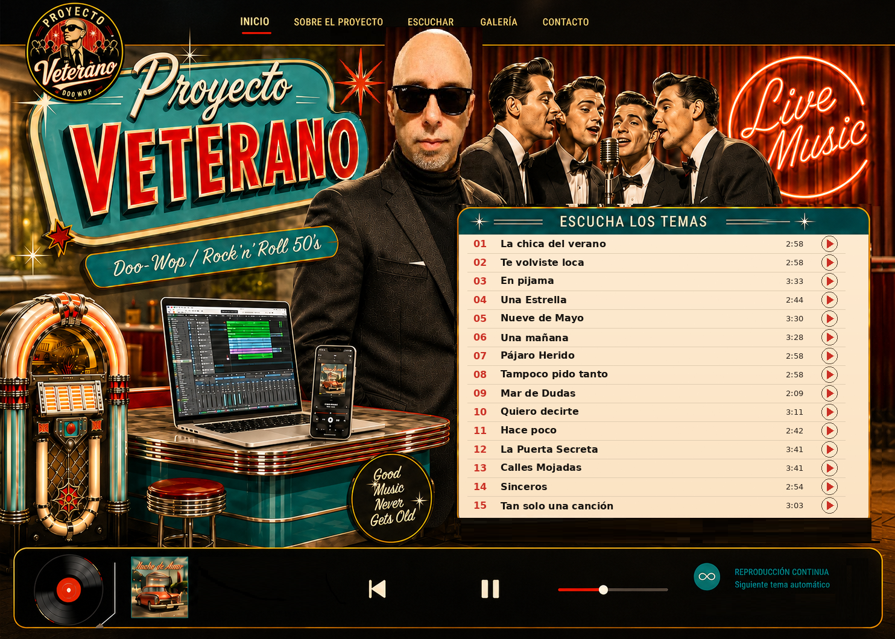
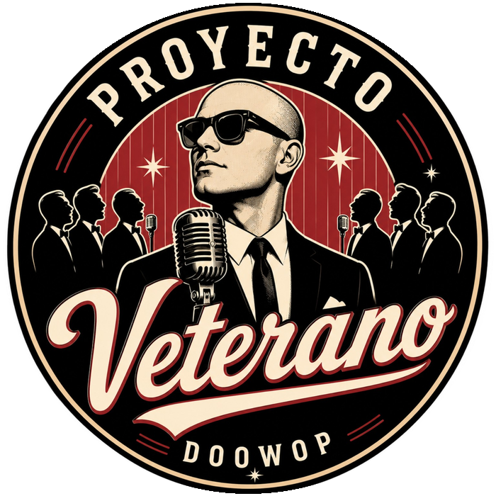
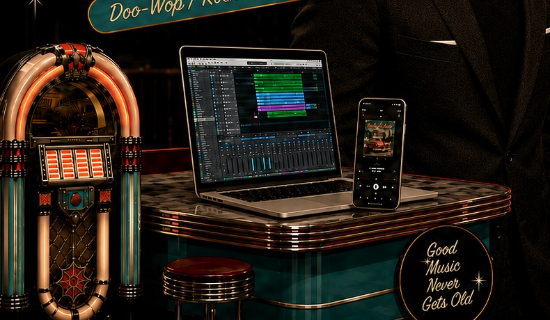

Proyecto Veterano

Lista de canciones
0:00
2:58

Sobre el proyecto
El sonido de ayer, producido hoy
Proyecto Veterano recupera las armonías, la estética sonora y la energía del Rock’n’Roll y del Doo-Wop de los años 50-60, utilizando herramientas actuales para componer, producir y compartir la música.
Todas las composiciones,tanto la letra como la música son originales y convenientemente registradas en la SGAE a nombre de su compositor y letrista Xavier Villaronga.
La producción instrumental y las voces son sintéticas, ayudándonos de las mas modernas herramientas de software para una mejor experiencia del oyente.

Escucha los temas
Reproduciendo ahora
La chica del verano
Proyecto Veterano
0:00
2:58